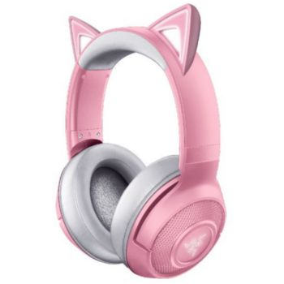

Casques Razer:
Razer BlackShark V2 Pro - Wireless Gaming Headset
Avec sa transmission haute vitesse et sa latence extrêmement basse, notre connexion sans fil de 2,4 GHz à la pointe de l’industrie vous fera profiter d’un audio sans perte, toujours synchronisé avec votre jeu. Vous ne raterez jamais rien .
Razer Kaira Pro Wireless Headset for Xbox Series X and Mobile Xbox Gaming
Haut-parleurs en titane de 50 mm Razer TriForce: Grâce à leurs diaphragmes au revêtement en titane pour plus de clarté, nos haut-parleurs à la pointe de la technologie peuvent régler séparément les sons aigus, moyens et graves : profitez d’un son plus clair, plus éclatant, aux aigus plus riches et aux basses plus puissantes.
Razer Kraken BT Kitty Edition - Quartz
